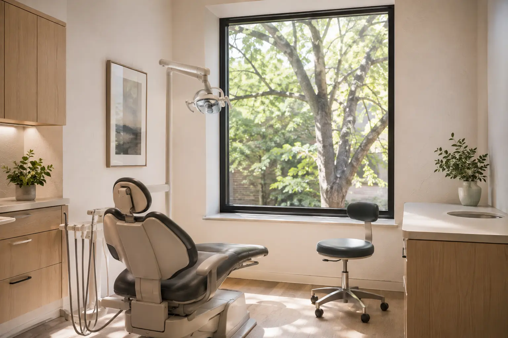

Exams & prevention
Exams, cleanings, digital X-rays, gum-health evaluations, and oral cancer screenings. These visits are a practical way to keep track of your oral health.
Dental services
For routine visits, a problem that needs attention, or a change you have been considering.

Exams, cleanings, digital X-rays, gum-health evaluations, and oral cancer screenings. These visits are a practical way to keep track of your oral health.
Tooth-colored fillings, crowns, bridges, and implant restorations for teeth that are damaged, worn, or missing.
Whitening, bonding, and veneers for changes to the color, shape, or alignment of your smile.
Prompt evaluation of tooth pain, swelling, a broken tooth, or another concern that should not wait.
Appointments
Call the office or send an appointment request online.
Contact Rowan